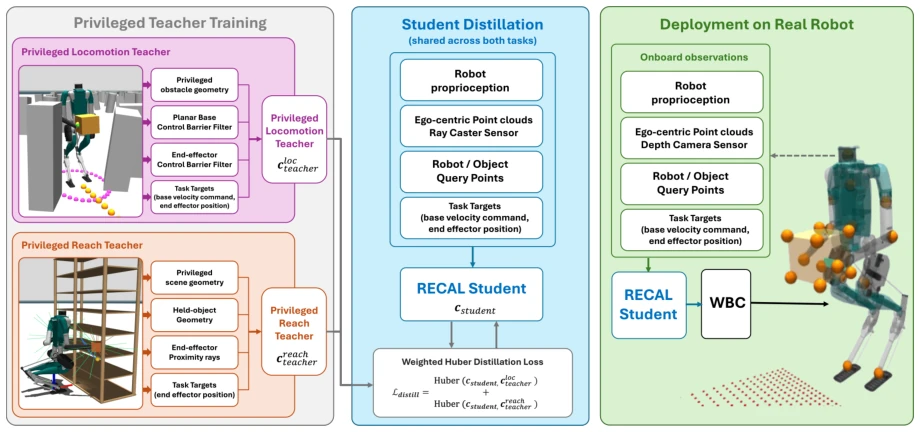
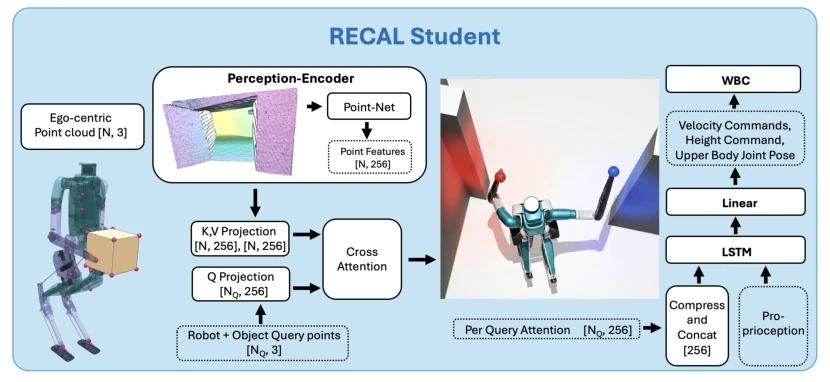
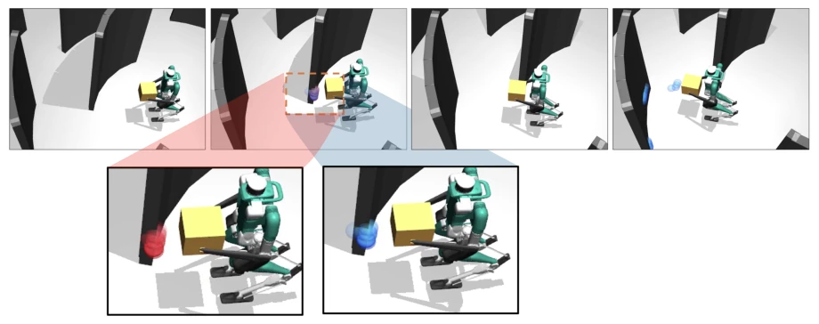
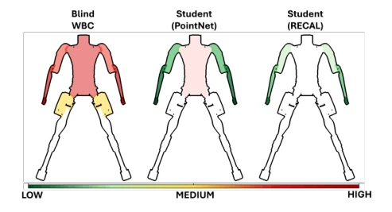

This paper equips the "blind" WBC with a pair of glasses; the RECAL "cheat" is quite practical, requiring no retraining of the underlying controller, just modifying the input directly. But do not get too excited too soon, it still relies on the "God's eye view" teacher in simulation. When deployed on real hardware, the depth camera's field of view is limited, what about the blind spots behind? Moreover, it can only avoid obstacles but cannot "touch" obstacles; semantic understanding? Non-existent. However, it runs successfully on Digit V3, at least much faster than pure optimization methods. It proves the effectiveness of cross-attention in geometric perception, but the static environment assumption and rigid object limitations make it possible to "fail" in complex dynamic scenes. Overall, it is a decent intermediate-layer solution, but still far from general intelligence.
Humanoid robot Whole Body Control (WBC) typically only manages tracking commands, ignoring whether there are walls around. Commands from upstream planning or teleoperation often contain flaws, causing the robot to collide with walls [12, 13, 14]. Although traditional optimization methods can avoid obstacles, they are computationally too slow and difficult to scale to complex scenes [1, 2, 3]. Existing learning-based controllers either only handle walking [4, 5, 6] or only handle grasping [7, 8], rarely capable of simultaneously handling floating-base motion, end-effector tracking, and handheld object avoidance. This results in robots either colliding or being unable to move in cluttered environments. Furthermore, existing methods lack an explicit association between the robot's body geometry and the environment, making it difficult to avoid collisions while maintaining tracking accuracy.

Fig. 1. System overview: RECAL augments a blind WBC with geometry-aware command adaptation. Privileged teachers generate safe commands for locomotion and reaching, which are distilled into a shared set of student commands. At deployment, RECAL uses only onboard proprioception, egocentric point clouds, and robot/object query points to modify target commands before the WBC, avoiding unsafe motion while preserving feasible tracking.
The overall architecture is hierarchical. The bottom layer is the pre-trained Masked Humanoid Controller (MHC) [14], responsible for stable tracking. The upper layer is the RECAL module, acting as an adapter. RECAL receives proprioceptive perception, environment point clouds, and commands. It uses 37 query points (body keypoints + object bounding box corners) to "query" the environment point cloud, extracting local geometric features through a multi-head cross-attention mechanism (Cross-Attention). These features are compressed and concatenated with the proprioceptive state and commands, then fed into an LSTM to generate corrected commands. Training utilizes distillation; the teacher strategy (CBF or RL) provides safe commands in simulation, while the student relies solely on sensors to imitate. RECAL's core innovation lies in treating robot geometry as the Query and the environment point cloud as the Key/Value, achieving fine-grained collision perception rather than global encoding.

Fig. 2. RECAL architecture. Environment points and robot/object query points are embedded and cross-attended to produce per-query, geometry-aware features. These features are compressed, concatenated with proprioception and the input command, and passed through a recurrent command adapter to produce the modified WBC command ˆct.

Fig. 3. Evolution of hand query attention scores during a locomotion task execution. We show the attention scores for the local environment point cloud at left-hand (blue) and right-hand (red) query points. As the hands approach an obstacle, they attend more strongly to nearby relevant geometry, producing local geometry-aware features for collision avoidance.
Tested on simulation and real hardware Digit V3. Compared blind WBC, Teacher, PointNet, and Voxel baselines. Metrics include collision-free success rate (CF) and tracking deviation (Dev). RECAL's CF is significantly higher than blind WBC and PointNet in difficult scenes, approaching the Teacher. Real hardware demonstrations included walking, carrying, and grasping, successfully avoiding obstacles. However, limited by the depth camera's field of view, rear blind spots were not handled. Force analysis shows RECAL reduced collision forces. Ablation experiments indicate cross-attention outperforms PointNet and Voxel encoding.

Fig. 4. Averaged contact force on the robot body for Hard variant of Adaptive-arm locomotion, Frozen-arm locomotion and Stationary reach tasks. RECAL achieves significantly lower collision frequency and impact forces on the robot body.